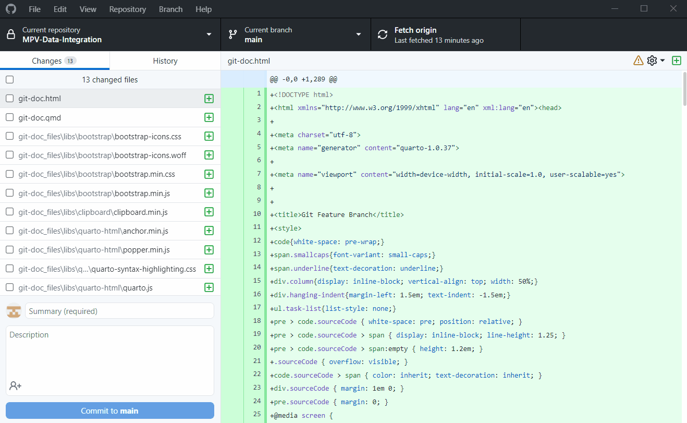
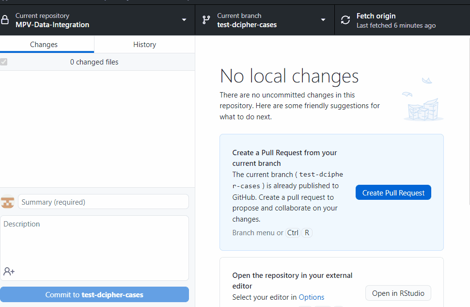
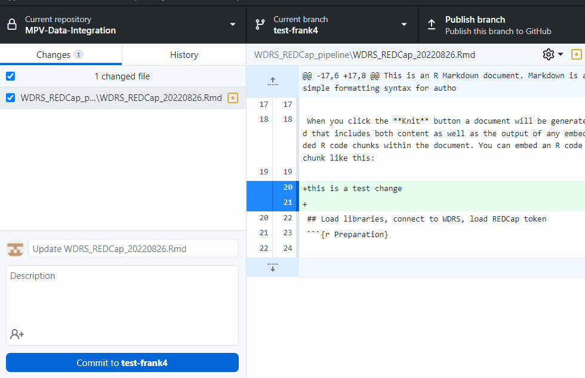

Git
Intro
Showing how to create and work off of a feature branch using git and github.
Before writing code
First check to see if your main branch is up to date and has the most recent commits added. This should be the first thing you do before running/writing any code.
git status will tell you:
- Which branch you are in
- If your local branch is up to date when comparing to that branch in the remote repo
- If you have any files waiting to be committed
git fetch will:
- Refresh your branch
- Search for any differences between your local clone and the repo in github. If there are changes, it will display a message
git pull will pull all the changes in the remote repo into your local clone branch
git statusOn branch main
Your branch is up to date with 'origin/main'.
Changes to be committed:
(use "git restore --staged <file>..." to unstage)
new file: images/gitdesk.gif
new file: images/gitdesk23-01.gif
new file: images/gitdesk23.gif
new file: images/gitdesk233-01.gif
new file: images/gitdesk233.gif
new file: images/gitdesk2333-01.gif
new file: images/gitdesk2333.gif
Changes not staged for commit:
(use "git add <file>..." to update what will be committed)
(use "git restore <file>..." to discard changes in working directory)
modified: git.qmd
Untracked files:
(use "git add <file>..." to include in what will be committed)
../nul
git.rmarkdown
git fetch
git pullAlready up to date.It’s the same in the git desktop app. Make sure you are in the branch you want to be in, then click fetch and pull to update that branch to include the most recent commits in the remote repo

Switch to feature branch
If we want to make changes to code, first make a new branch off the main.
git branch will show all the branches in the repo and the one you are currently in
git checkout -b new-branch-name will create a new branch. In this case, we already have our feature branch called test-dcipher-cases
git checkout branch-name will switch to a branch. In this case we can switch to test-dcipher-cases
git branch listings
* maingit checkout test-dcipher-casesOr in the desktop app

Making changes
If we want to make a change to the code, make a new branch off of test-dcipher-cases and switch to that branch
git checkout -b test-frank2and in the desktop app:

Committing changes to the feature branch
Now you can make changes in your R script and when you save them they will be ready to be committed to this new branch.
git add to stage your changes
git commit -am "messge" to commit those changes to the new branch with a message
git push --set-upstream origin test-dcipher-cases to push those changes to the remote repo on the new branch
git add
git commit -am "this is a test- pls delete"
git push --set-upstream origin test-dcipher-cases
Making a pull request
This part happens in github.
- Select who you want to review your code and assign yourself.
- Use labels to tag what this pull request refers to (very helpful in search for changes when managing the project) and
- Add a milestone if it applies.
This should automatically send an email to the reviewers that there is code needed to be merged to a branch.

For Reviewers
When reviewing changes, make sure the commit/changes are being merged to the correct branch.
Github automatically compares to the main branch, so you will have to manually click on the base branch and change it to test-dcipher-cases